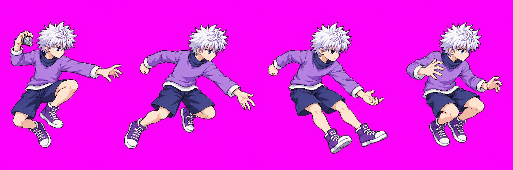
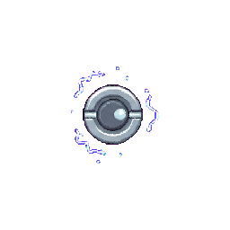
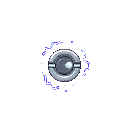
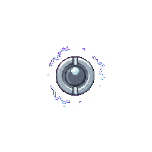
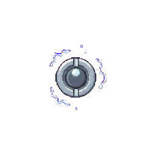
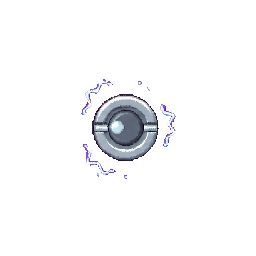
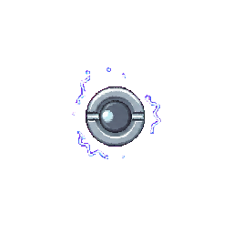
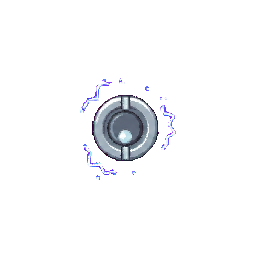
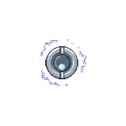

Killua skills revamp · Batch 3
B2 throw v07 and A10 yoyo v01. The selected version of each is shown. This is an art review; Claude handles engine integration and in-game move preview after approval.
Technical holds: throw v07 fails the scale gate (head 1.28× and feet proxy 1.49× idle) and one frame clips 17 px at the right edge. No v07 character atlas was written; the body-sheet output measured v06 and is stale. Astra's provisional raw audit is HOLD: the arm holding the prop appears to change roles between f0 and f1, and the f1 middle-finger/string anchor is unclear. The vfx packer split yoyo v01 into 8/8 cells, but the steel disc measures about 88 px across in the 256 px cell (brief target about 52 px). The generator returned 1774×887 instead of the requested strip dimensions; its first transient call was not preserved, so that attempt's source/hash is missing. All generation calls are used for both assets.
B2 · Yo-yo throw, four poses

Raw candidate, 2172×724. f0 prop, f1 snap, f2 follow-through, f3 catch. The strict pack failed, so these are not final 256 px character cells.
f1 · anchor detail (raw crop)
The middle finger is not clearly isolated at review scale. No version-bound hand anchor was measured because no accepted v07 atlas exists.
B2 attempt inventory · Astra provisional raw audit: HOLD.
A10 · Electrified steel yo-yo
One packed cell at 256×256

Packer found all 8 frames. The grayscale steel-disc bounds are about 88×88 px at final cell scale versus the brief's 52 px target. The animation turns the rim notches in quarter-turn steps every two frames.
All eight packed frames
f0
f1
f2
f3
f4
f5
f6
f7 A10 attempt inventory. The raw source is here. Packer candidate output is displayed against a stage-colored background.
Verdict
Identity: the throw candidate reads as Killua and the steel prop appears only in f0; yoyo v01 reads as a spinning steel disc with sparse crackle. Poses and scale: the four-action throw reads but arm continuity/anchor and size need attention; yoyo is visibly larger than its 52 px target. Technical: throw v07 has no accepted atlas and fails scale/clipping checks; yoyo packs 8/8 from an off-dimension canvas, with first-call provenance incomplete. Both versions need user review; approval of a drawing will not clear technical holds.